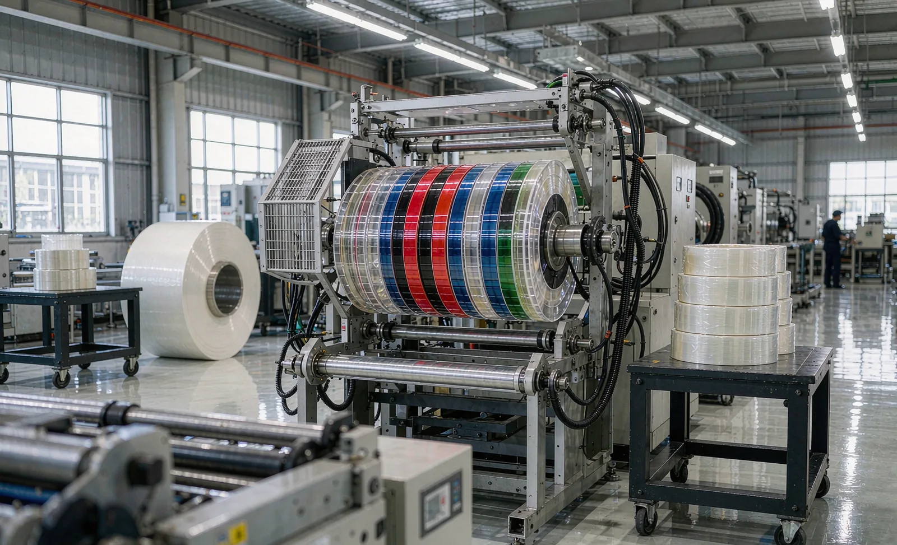
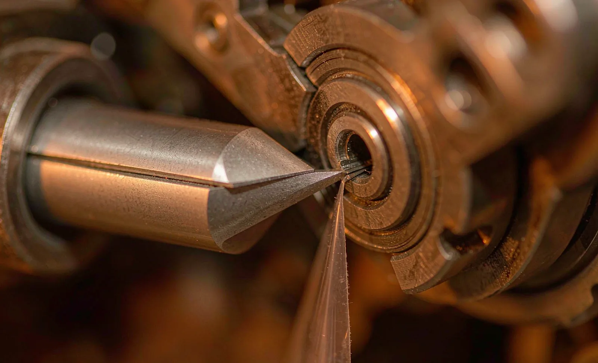

Published September 14, 2026 | By HDPTH Technical Editorial Team

Adhesive tape is a three-layer problem: a backing, an adhesive system and — for double-sided and transfer products — a release liner. A slitter rewinder built around the backing alone will work beautifully on polyester film and then produce adhesive bleed, smeared edges, liner damage and sticky rollers on tape. Buyers specifying a tape slitter should therefore walk through five decisions in order: construction and web path, cutting method, narrow-width capability, large-diameter rewind, and splice control.
Start with the construction and the web path
Write the product construction into the RFQ completely, because each layer changes the machine:
- Backing: type (BOPP, PET, paper, cloth, foam, tissue), thickness range and stiffness. Foam and cloth backings behave very differently from film under cutting pressure.
- Adhesive system: solvent acrylic, hot-melt or rubber-based; adhesive weight (g/m²); single-sided, double-sided or transfer.
- Release liner: presence, material (glassine paper, PET), weight and coating. Liner-backed tapes are often slit liner-side or adhesive-side down — the orientation must be stated.
- Temperature behavior: softening range of the adhesive, since friction heat at blades and rollers can start adhesive flow.
Then demand a web-path concept matched to it. The questions to ask: which surfaces contact the adhesive face, and are they low-adhesion, polished or covered with release-grade material? Is there a blade cooling or temperature-management strategy for hot-melt products? How are rollers cleaned between grades, and how long does changeover cleaning take? Where adhesive face-down running is required, can the machine guarantee it through the entire path, including at rewind contact rolls?
Razor or shear: choose by trial, not habit
Both cutting methods appear on tape lines, and the wrong default is expensive in edge defects and knife consumables.
| Criterion | Razor slitting | Shear slitting |
|---|---|---|
| Best fit | Thin, stable backings; simpler constructions; high lane counts | Thicker, coated, foam or liner-backed tapes; demanding edge quality |
| Adhesive behavior | Blade drags through adhesive; risk of residue and edge buildup; blade life shorter on tacky products | Scissor action separates cleanly; better control of adhesive flow at the edge |
| Speed and setup | Fast lane changes, low blade cost, quick threading | More setup per changeover; blade wrap and overlap must be set precisely |
| Typical watchpoints | Blade angle, blade material (coated or carbide for tacky products), replacement interval | Male/female knife alignment, knife pressure, wear monitoring, support-roller condition |
The correct answer is empirical. Ask suppliers to run both methods on your tape — ideally at your production speed and your maximum width — and to compare edge condition under magnification: adhesive smear, fuzz on paper backings, liner tearing, edge buildup height. Write the selected method, blade specification and change interval into the specification, with the trial report as the reference.

Narrow-width slitting
Many tape products — electrical tape, double-sided foam strips, bag-sealing and splicing tapes — are slit to a few millimetres or less. Narrow lanes stress the machine in three places:
- Knife spacing: blade holders must set and hold sub-millimetre pitch accurately, and the layout must allow blade thickness without starving the lanes.
- Shaft and core strength: many narrow lanes on one rewind shaft multiply core loads; deflection shows up as width variation and hardness differences across the shaft.
- Rewind control: light, narrow rolls need gentle lay-on and often individual or grouped tension assist to wind true; ask how narrow-lane tension is managed and whether lane grouping is recipe-configurable.
Specify the narrowest production lane width, the lane count at that width, and the width tolerance — then require a demonstration at that lane count, not a scaled-down one.
Large-diameter rewinding
Long finished rolls cut handling cost per metre, but roll diameter raises radial pressure on inner wraps, and tape adhesive can cold-flow under sustained pressure — producing hard rolls, telescoping risk and blocks that will not unwind cleanly. To rewind large diameters reliably, specify:
- Maximum finished diameter per rewind configuration, stated for each core size and backing type.
- Taper-tension profile: how tension decreases from core to surface, defined as a recipe the operator can store and recall.
- Contact pressure control: how lay-on or surface-wind pressure is regulated as diameter grows, to protect the adhesive layer.
- Hardness window: target roll hardness range and measurement method, checked at defined diameters.
- Storage test: sample rolls stored at agreed temperature and time, then rechecked for hardness change, telescoping and unwind behavior — this is where adhesive cold flow appears.
Splice rate control
Every splice in a finished roll is a process interruption for your customer — a die-cutting press stops, a dispensing line flags the joint, an automated line may reject the roll outright. Splice acceptance differs radically by application, so it must be a contractual number:
- Define the limit: maximum splices per roll, or per kilometre, per product family; zero-splice grades where the application demands it.
- Define the splice itself: type (butt, overlapped), length, adhesive used, marking method, and whether the splice must sit at a fixed clock position in the roll.
- Define detection: how splices are flagged on the machine — splicing sensor, length counter, operator log — and how splice counts appear on the roll label and production record.
- Define the source of truth: FAT and first-production data on splice frequency at your roll lengths, so the promised rate is measured, not assumed.
If your supplier’s proposed line achieves the target rate only with perfect incoming rolls, add parent-roll quality limits (web defects, length between parent splices) to the same document. The finished-roll splice rate is a chain property, not a machine property alone.
Specify by trial, accept by data
Send HDPTH your tape construction, adhesive system, liner, slit widths, roll diameters and splice limits. We will propose a cutting and rewind configuration with testable acceptance criteria for your product.
Submit Your Project InquiryFAT: prove the five decisions on your tape
Build the tape-specific FAT section around the five decisions above, using the general structure of the slitter rewinder FAT checklist:
- Edge quality on all lanes at production speed: magnified edge inspection for adhesive smear, buildup, liner damage and fuzz; photographic record kept with the report.
- Cutting-method comparison signed off: razor vs shear results on your material, chosen method documented with blade spec and change interval.
- Width verification across the shaft at the narrowest lane width and full lane count, at start, middle and end of rolls.
- Rewind audit at maximum diameter: hardness profile, telescoping measurement, first-wrap condition, plus the agreed storage recheck.
- Splice-rate measurement across a representative production run, with splice positions, marking and logging verified against the specification.
- Adhesive-face orientation preserved through the full web path, confirmed on finished rolls.
Frequently asked questions
Should I use razor or shear slitting for adhesive tape?
It depends on the construction. Razor slitting is simple and inexpensive for thin tapes with stable backing but can drag adhesive and leave residue. Shear slitting, with opposing blades, gives a cleaner cut on thicker, coated or liner-backed tapes and controls adhesive flow better. The supplier should trial both on the buyer’s actual tape before fixing the method.
What causes adhesive transfer and edge buildup when slitting tape?
Adhesive can flow under cutting pressure, transfer to blades, rollers and liners, or accumulate as edge buildup (adhesive bleed) on the slit edge. The main levers are blade type and temperature, cutting speed, web tension, and contact surfaces along the web path. Specifications should name the tape’s adhesive system and define acceptable edge condition on production material.
How narrow can adhesive tape be slit?
Narrow slitting of a few millimetres and below is achievable, but the practical minimum depends on blade type, backing stability and rewind arrangement. Narrow lanes need precise knife spacing, minimal shaft deflection and usually individually controlled or assisted rewind. Confirm the minimum lane width by trial, not by catalogue claim.
What limits large-diameter rewinding on tape?
Large roll diameters increase radial stress at the core, magnify hardness variation and raise the risk of adhesive cold flow between wraps. Taper tension, appropriate inner-wrap support and contact pressure control are essential, and the specification should state the maximum diameter, the taper profile and the hardness window that the finished rolls must meet.
What is an acceptable splice rate for finished tape rolls?
It depends on the downstream process. Industrial masking or packaging tape tolerates occasional splices; die-cutting and electronics applications often demand very low or zero splice rates. Define the maximum number of splices per roll or per kilometre, the splice type and marking, and verify the achieved rate with production data rather than accepting a verbal target.